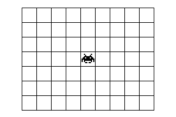
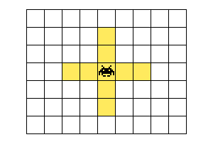
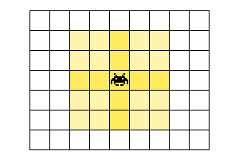
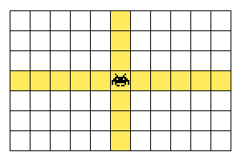
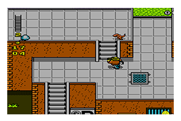
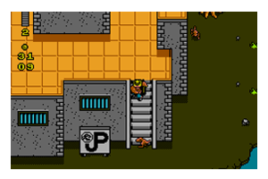
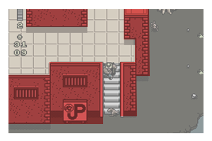
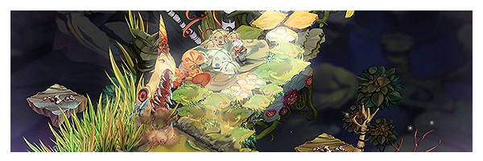
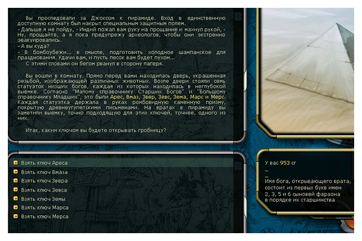

Что нам понадобится?
Заниматся разработкой игры вы будете в свободное от работы время
Также готовые игровые движки под запретом
Hебольшая легенда для визуального восприятия сложности задания
Необходимо 1 слот с сохранением которое могло бы хранится при выключенном компьютере. например в локал сторедже.
Имя профайла сохранения должно быть задано пользователем.
Игра должна уметь сама себя сохранять через определенный промежутки времени а также принудительно по определенному действию.
Будьте внимательны чтобы не пришлось переписывать структуру сохранение если вдруг понадобится изменить какие либо параметры
слотов может быть и больше например 3
Персонаж должен обладать некоторыми характеристиками
Количеством здоровья например: 0-100
количество здоровью со временем поднимается до максимального значения
Значением атаки
Уровнем голода например: 0-100, пожрать то всем в походе хочется
поле зрения Персонаж видит небольшой радиус в новой или неисследованной комнате. Все что было уже исследовано показывается полностью
личный уровень стартовый: 1
количество опыта стартовый: 0
уровень уклонения стартовый 20% растет на 10%(возможно коректировка уровня роста) с уровнем
Персонаж должен уметь передвигатся с клетки на клетку при нажатии стрелок на наклавиатуре (передвижение может быть продублировано на кнопки WASD)
Наш персонаж будет исключительно бойцом в ближнем бою. Тоесть при попытки перейти на соседнюю клетку и обнаружив там что то что можно убить он будет пытатся это сделать. Если там будет стенка он будет бится о нее головой и терять свой ход))). За каждый ход он будет наносить урон один раз. А получать сдачи в ответ он может и несколько раз. в зависимости от того куда именно его занесет удача в лице игрока.
Мы должны както видеть количество жизни персонажа,
и иметь пару кнопок (кнопка сохранения, кнопка выхода из игры и возможно кнопка настроек параметров если они будут необходимы)
Можно например по нажатию клавишы ескейп показывать менюшку с пунктами сохранить выйти и т.д
Если используются дополнительные данные такие как голод опыт или уровень они должны быть также отображены.
Карта будет представлять из себя небольшое поле состоящие из прямоугольных клеток например 100*100,
на котором определеным образом расставлены елементы для взаимодействия.
Передвижения по карте будут проиходить горизонтально или вертикально
На карте должны быть расставлены елементы такие как:
Мы делаем почти пошаговую игру, но все же приключения не будут ждать вас сильно долго
поэтому общий таймер будет например 3 секунды
(может быть увеличен).
За это время персонаж может попробовать переместить свою 5 точку на одну клетку,
если он не передвинулся значит считается что он неходил и ход переходит к приключениям
За одно перемещение персонаж расходует одно очко из доступных очков сытости и востанавливает 2 еденицы здоровья.
Количесво востановленного здоровья не может превышать доступные максималдьный значения для текущего уровня персонажа.
Eсли количество сытости упало до 0 то персонаж перестает пополнять здоровье и наоборот начинает его терять с таймером в 20 едениц за 10 ходов.
при этом на карте должен быть сгенерен новый елемент еды. если такого нет в наличии
если персонаж стоит то востановление здоровья за один ход продолжает работать
На карте вы расствите в задуманном вам порядке противников, ловушки, ценные призы, да так чтобы персонажу пришлося попотеть в поисках сокровища.
Общие свойства для всех типов противников
Зрение (слепой пью, 2 клетки крестом, 4 клетки крестом, 4 клетки восьмеркой, крест неограничено)
Слепой пью
2 клетки крестом
4 клетки восьмеркой
крест неограничено
На уровне должны быть минимум 2 противника типа (трусливый, пассивный, без атаки, слепой пью)
Ещо может быть один более сложый противник типа (подвижный, активный, ближний, зрение 4 клетки крестом)
Можете самостоятельно придумать дополнительно другие комбинации противников например. нечто преследующие персонажа и садистки покусывающие в спину по 1 ед здоровья
Вы можете текстурировать вашу карту испольщую псевдо трехмерные рисунки обектов, стен, дверей,
Вот хороший пример как комбинацией проходимых и непроходимых блоков с текстурированием выстроили много уровневую карту
Jurassic park 8 bit
Jurassic park 8 bit
непроходимые клетки
Построение игрового уровня можно делать постепенно (по заранее установленному плану). например персонаж подходит к двери. открывает ее и видит что комната не сразу становится видимой а как бы собирается из кусочков (в нашей игре например клетки карты также могут появлятся постепенно)
Фон за пределами игрового поля тоже может иметь графику, которая при движение персонажа по игровому полю будет создавать еффект паралакса
Bastion
Игра может иметь звуковое сопровождение как фоновое так и на различный действия как персонажа так и его противников
Также игра может иметь дополнителное текстовое описание так сказать легенду. которую можно показывать в определенных местах, чтобы игроку было понятно что и для чего он делает. Или использовать для построения не сложных головоломок
Космические рейнджеры
